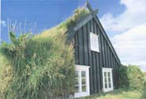

This partially underground, earth-sheltered home near Overbrook, Kansas, was designed to thwart the brisk Midwestern winds while providing a sunny, sheltered courtyard that owners Larry and DeeAnn Woodson say remains enjoyable almost year-round.